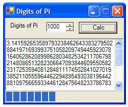
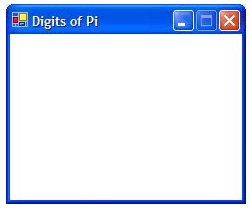
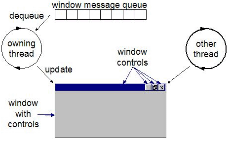
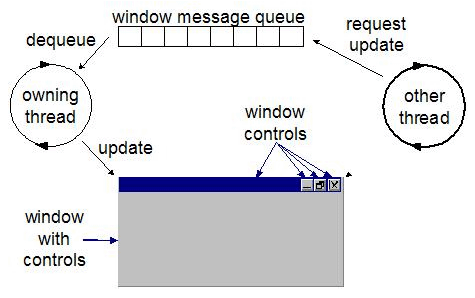

Download |
Alles begann ganz harmlos. Zum ersten Mal sollte ich eine Kreisfläche unter .NET berechnen. Hierzu war selbstverständlich eine exakte Darstellung von Pi (p) erforderlich. System.Math.PI ist nützlich; da sie aber nur maximal 20 Nachkommastellen ausgibt, sorgte ich mich um die Genauigkeit meiner Berechnung. (Tatsächlich benötigte ich 21 Nachkommastellen, um absolut sicher zu sein). Und wie es sich für einen einigermaßen brauchbaren Programmierer gehört, vergaß ich zunächst einmal völlig das eigentlich zu lösende Problem und schrieb stattdessen ein Programm, mit dem ich Pi auf beliebig viele Nachkommastellen genau berechnen konnte. Abbildung 1 zeigt meine Lösung.
.gif)
Abbildung 1. Nachkommastellen der Anwendung Pi
Fortschritt bei Operationen mit langer Laufzeit
Zwar müssen die meisten Anwendungen keine Nachkommastellen von Pi berechnen, doch müssen viele Arten von Anwendungen Operationen mit langer Laufzeit ausführen, wie beispielsweise Dokumente drucken, einen Webdienst aufrufen oder die Zinserträge eines bestimmten Milliardärs in Kalifornien berechnen. Und die Benutzer warten in der Regel geduldig, bis derartige Operationen abgeschlossen sind, und erledigen in der Zwischenzeit häufig andere Aufgaben - sofern beim laufenden Vorgang nur ein Fortschritt sichtbar ist. Aus diesem Grund enthält sogar meine kleine Anwendung eine Statusanzeige.
Der von mir verwendete Algorithmus berechnet Pi mit jeweils 9 Nachkommastellen. Wenn eine neue Gruppe von Nachkommastellen verfügbar ist, aktualisiert das Programm den Text und verschiebt die Statusanzeige, um den Fortschritt visuell darzustellen. Abbildung 2 zeigt beispielsweise den Fortschritt bei der Berechnung von Pi mit 1.000 Nachkommastellen (wenn 21 Stellen gut sind, können 1.000 Stellen auch nicht schaden, oder?).

Abbildung 2. Berechnen von Pi mit 1.000 Nachkommastellen
Im nachstehenden Code ist zu sehen, wie die Benutzeroberfläche (UI, User Interface) aktualisiert wird, während die Nachkommastellen von Pi berechnet werden:
void ShowProgress(string pi, int totalDigits, int digitsSoFar) {
_pi.Text = pi;
_piProgress.Maximum = totalDigits;
_piProgress.Value = digitsSoFar;
}
void CalcPi(int digits) {
StringBuilder pi = new StringBuilder("3", digits + 2);
// Show progress
ShowProgress(pi.ToString(), digits, 0);
if( digits > 0 ) {
pi.Append(".");
for( int i = 0; i < digits; i += 9 ) {
int nineDigits = NineDigitsOfPi.StartingAt(i+1);
int digitCount = Math.Min(digits - i, 9);
string ds = string.Format("{0:D9}", nineDigits);
pi.Append(ds.Substring(0, digitCount));
// Show progress
ShowProgress(pi.ToString(), digits, i + digitCount);
}
}
}
Alles funktionierte einwandfrei, bis ich - mitten in der Berechnung von Pi auf 1.000 Nachkommastellen genau - zu einer anderen Aufgabe wechselte und im Anschluss daran zu meiner Berechnung zurückkehrte. Was mich dann erwartete, zeigt Abbildung 3.

Abbildung 3. Hier hat kein "Paint"-Ereignis stattgefunden!
Die Ursache des Problems liegt auf der Hand: Da es sich bei meinem Programm um eine Singlethread-Anwendung handelt, kann der Thread während der Berechnung von Pi nicht zusätzlich die Benutzeroberfläche darstellen. Vor diesem Problem hatte ich noch nie gestanden. Wenn ich sonst die Eigenschaften TextBox.Text und ProgressBar.Value festlegte, wurden diese Steuerelemente sofort dargestellt (wobei allerdings die Darstellung der Statusanzeige besser war als diejenige des Textfeldes).
Sobald ich die Anwendung aber in den Hintergrund und danach wieder in den Vordergrund brachte, musste ich den gesamten Clientbereich darstellen - ein Paint-Ereignis für das Formular. Da ein anderes Ereignis erst verarbeitet wird, nachdem die Rückkehr von dem bereits in Verarbeitung befindlichen Ereignis (d. h. dem Click-Ereignis der Schaltfläche Calc) erfolgt ist, besteht keine Möglichkeit, irgendeinen weiteren Fortschritt zu sehen. Deshalb musste ich nun dafür sorgen, dass der UI-Thread für die Ausführung von UI-Aufgaben freigegeben und der Prozess mit langer Laufzeit im Hintergrund verarbeitet wurde. Zu diesem Zweck benötigte ich einen weiteren Thread.
Asynchrone Operationen
Mein aktueller synchroner Click-Handler sah so aus:
void _calcButton_Click(object sender, EventArgs e) {
CalcPi((int)_digits.Value);
}
Das Problem besteht darin, dass der Thread bis zur Rückkehr von CalcPi nicht aus dem Click-Handler zurückkehren kann. Demzufolge kann das Formular das Paint-Ereignis (oder irgendein anderes Ereignis) nicht ausführen. Eine Möglichkeit zur Lösung dieses Problems ist das Starten eines weiteren Threads:
using System.Threading;
.
int _digitsToCalc = 0;
void CalcPiThreadStart() {
CalcPi(_digitsToCalc);
}
void _calcButton_Click(object sender, EventArgs e) {
_digitsToCalc = (int)_digits.Value;
Thread piThread = new Thread(new ThreadStart(CalcPiThreadStart));
piThread.Start();
}
Statt auf die Beendigung von CalcPi warten zu müssen, bis die Rückkehr aus dem Click-Ereignis der Schaltfläche erfolgen kann, beginne ich nun einen neuen Thread und starte ihn. Die Thread.Start-Methode setzt den neuen Thread als startbereit in die Warteschleife und kehrt anschließend sofort zurück, damit der UI-Thread seine eigenen Aufgaben wieder aufnehmen kann. Wenn der Benutzer mit der Anwendung interagieren möchte (sie beispielsweise in den Hinter- oder Vordergrund verschieben, ihre Größe ändern oder sie sogar schließen möchte), kann der UI-Thread alle diese Ereignisse ungehindert verarbeiten, während der Arbeitsthread Pi in seinem eigenen Tempo berechnet. Abbildung 4 zeigt die beiden Threads bei der Ausführung der jeweiligen Aufgaben.

Abbildung 4. Systemeigenes Multithreading
Möglicherweise ist Ihnen aufgefallen, dass ich keine Argumente an den Einstiegspunkt des Arbeitsthreads CalcPiThreadStart übergebe. Stattdessen bringe ich die Anzahl der zu berechnenden Nachkommastellen im Feld _digitsToCalc unter, wonach der Einstiegspunkt des Threads aufgerufen wird, der seinerseits wiederum CalcPi aufruft. Dies ist ein recht mühsames Verfahren und einer der Gründe, warum ich für asynchrone Aufgaben Delegates bevorzuge. Delegates unterstützen die Verwendung von Argumenten. Deshalb kann ich auf ein zusätzliches temporäres Feld und eine zusätzliche Funktion zwischen den aufzurufenden Funktionen verzichten.
Zur Erläuterung von Delegates: Es handelt sich hierbei ganz einfach um Objekte, die statische Funktionen oder Instanzfunktionen aufrufen. In C# werden Delegates mithilfe der Syntax zum Deklarieren von Funktionen deklariert. Ein Delegate zum Aufrufen von CalcPi sieht beispielsweise so aus:
delegate void CalcPiDelegate(int digits);
Nach dem Einrichten eines Delegates kann eine Instanz programmiert werden, um die CalcPi-Funktion folgendermaßen synchron aufzurufen:
void _calcButton_Click(object sender, EventArgs e) {
CalcPiDelegate calcPi = new CalcPiDelegate(CalcPi);
calcPi((int)_digits.Value);
}
Doch CalcPi soll selbstverständlich nicht synchron, sondern asynchron aufgerufen werden. Bevor dieser Schritt programmiert wird, müssen Sie etwas mehr über die Funktionsweise von Delegates wissen. Durch die vorstehende Delegatedeklaration wird eine neue Klasse deklariert, die von MultiCastDelegate abgeleitet ist und drei Funktionen enthält - Invoke, BeginInvoke und EndInvoke:
class CalcPiDelegate : MulticastDelegate {
public void Invoke(int digits);
public void BeginInvoke(int digits, AsyncCallback callback,
object asyncState);
public void EndInvoke(IAsyncResult result);
}
Als ich eine Instanz von CalcPiDelegate programmierte und diese dann wie eine Funktion aufrief, wurde tatsächlich die synchrone Invoke-Funktion aufgerufen, von der wiederum meine eigene CalcPi-Funktion aufgerufen wurde. BeginInvoke und EndInvoke sind jedoch das Funktionenpaar, das es Ihnen ermöglicht, eine Funktion asynchron aufzurufen und die Ergebnisse des Funktionsaufrufs zu nutzen. Damit die CalcPi-Funktion in einem anderen Thread aufgerufen wird, muss BeginInvoke mit diesem Code aufgerufen werden:
void _calcButton_Click(object sender, EventArgs e) {
CalcPiDelegate calcPi = new CalcPiDelegate(CalcPi);
calcPi.BeginInvoke((int)_digits.Value, null, null);
}
Beachten Sie, dass für die letzten beiden Argumente von BeginInvoke Nullwerte übergeben werden. Diese sind erforderlich, wenn das Ergebnis der zu einem späteren Zeitpunkt aufgerufenen Funktion genutzt werden soll (wofür auch EndInvoke zuständig ist). Da die CalcPi-Funktion die UI direkt aktualisiert, werden für die beiden Argumente ausschließlich Nullwerte benötigt. Einzelheiten zu synchronen und asynchronen Delegates finden Sie unter .NET Delegates: A C# Bedtime Story (englischsprachig).
An dieser Stelle angekommen, konnte ich rundum zufrieden sein. Meine Anwendung kombinierte nun eine vollständig interaktive UI, die bei einer Operation mit langer Laufzeit den Fortschritt anzeigte. Meine Zufriedenheit war jedoch schlagartig vergessen, als ich erkannte, was ich da eigentlich tat.
Multithreadsicherheit
Wie sich dann herausstellte, hatte ich ganz einfach Glück gehabt (oder Pech, von einem anderen Standpunkt). Microsoft Windows® XP stellte mir eine sehr stabile Implementierung des zugrunde liegenden Fenstersystems bereit, auf dem Windows Forms aufbaut. Das Fenstersystem ist in der Tat so stabil, dass es sogar meinen Verstoß gegen das erste Gebot der Windows-Programmierung - Eine Operation an einem Fenster immer aus dem ursprünglichen Thread heraus ausführen - problemlos verarbeitete. Leider gibt es aber keine Garantie dafür, dass andere, weniger stabile Implementierungen von Windows auf mein regelwidriges Verhalten ebenso problemlos reagieren.
Das Problem war unbestritten mein eigenes Werk. Wie Sie in Abbildung 4 sehen konnten, gab es zwei Threads, die gleichzeitig auf dasselbe zugrunde liegende Fenster zugriffen. Da jedoch Operationen mit langer Laufzeit in Windows-Anwendungen sehr häufig vorkommen, besitzt jede UI-Klasse in Windows Forms (d. h. jede letztlich von System.Windows.Forms.Control abgeleitete Klasse) eine Eigenschaft, die von jedem beliebigen Thread aus verwendet werden kann und so einen sicheren Zugriff auf das Fenster ermöglicht.
Hierbei handelt es sich um die InvokeRequired-Eigenschaft, die True zurückgibt, wenn der aufrufende Thread die Steuerung an den ursprünglichen Thread übergeben muss, bevor er eine Methode für das betreffende Objekt aufruft. Ein einfaches Assert in meiner ShowProgress-Funktion hätte mir den Fehler in meiner Programmierung sofort aufgezeigt:
using System.Diagnostics;
void ShowProgress(string pi, int totalDigits, int digitsSoFar) {
// Make sure we're on the right thread
Debug.Assert(_pi.InvokeRequired == false);
...
}
Hier drückt sich auch die .NET-Dokumentation ganz unmissverständlich aus. Sie gibt an: "Für ein Steuerelement gibt es vier Methoden, die aus jedem Thread heraus sicher aufgerufen werden können: Invoke, BeginInvoke, EndInvoke und CreateGraphics. Für alle anderen Methodenaufrufe sollten Sie eine der Aufrufmethoden verwenden, um den Aufruf an den Thread des Steuerelements zu marshallen."
Wenn ich die Steuerelementeigenschaften festlege, verstoße ich also ganz offensichtlich gegen diese Regel. Und die Namen der ersten drei Funktionen, die sicher aufgerufen werden dürfen (Invoke, BeginInvoke und EndInvoke) lassen deutlich erkennen, dass ein weiterer Delegate entwickelt werden muss, der im UI-Thread ausgeführt wird. Falls ich mir Sorgen um die Blockierung meines Arbeitsthreads machte, so wie es bei der Blockierung meines UI-Threads der Fall war, müsste ich die asynchronen Funktionen BeginInvoke und EndInvoke verwenden. Da der Arbeitsthread aber nur für die Verarbeitung des UI-Threads existiert, kann ich auch die einfachere synchrone Invoke-Methode verwenden, die wie folgt definiert wird:
public object Invoke(Delegate method); public object Invoke(Delegate method, object[] args);
Die erste Überladung von Invoke verwendet eine Instanz eines Delegates mit der Methode, die im UI-Thread aufgerufen werden soll, setzt aber keine Argumente voraus. Da jedoch die ShowProgress-Funktion, die zum Aktualisieren der UI aufgerufen werden soll, drei Argumente verwendet, wird die zweite Überladung benötigt. Außerdem ist ein weiterer Delegate für die ShowProgress-Methode erforderlich, damit die Argumente ordnungsgemäß übergeben werden können. Das folgende Codebeispiel zeigt, wie mithilfe von Invoke sichergestellt werden kann, dass die Aufrufe von ShowProgress - und damit die Verwendung der Fenster - im richtigen Thread angezeigt wird. (Auf diese Weise wird auch sichergestellt, dass beide Aufrufe von ShowProgress in CalcPi ersetzt werden):
delegate
void ShowProgressDelegate(string pi, int totalDigits, int digitsSoFar);
void CalcPi(int digits) {
StringBuilder pi = new StringBuilder("3", digits + 2);
// Get ready to show progress asynchronously
ShowProgressDelegate showProgress =
new ShowProgressDelegate(ShowProgress);
// Show progress
this.Invoke(showProgress, new object[] { pi.ToString(), digits, 0});
if( digits > 0 ) {
pi.Append(".");
for( int i = 0; i < digits; i += 9 ) {
...
// Show progress
this.Invoke(showProgress,
new object[] { pi.ToString(), digits, i + digitCount});
}
}
}
Die Verwendung von Invoke hat mir endlich einen sicheren Einsatz von Multithreading in meiner Windows Forms-Anwendung ermöglicht. Der UI-Thread erzeugt einen Arbeitsthread für die Ausführung der Operation mit langer Laufzeit, und der Arbeitsthread gibt die Steuerung zurück an den UI-Thread, wenn die UI aktualisiert werden muss. Abbildung 5 zeigt die sichere Multithreadingarchitektur.

Abbildung 5. Sicheres Multithreading
Vereinfachtes Multithreading
Der Aufruf von Invoke ist ein wenig mühsam und erfolgt in der CalcPi-Funktion zweimal. Deshalb könnte das Ganze vereinfacht und die ShowProgress-Funktion selbst aktualisiert werden, damit sie den asynchronen Aufruf ausführt. Wenn ShowProgress aus dem richtigen Thread heraus aufgerufen wird, aktualisiert sie die Steuerelemente; wird sie jedoch aus dem falschen Thread heraus aufgerufen, ruft sie sich selbst über Invoke in den richtigen Thread zurück. Damit können wir zu der vorhergehenden, einfacheren CalcPi-Funktion zurückkehren:
void ShowProgress(string pi, int totalDigits, int digitsSoFar) {
// Make sure we're on the right thread
if( _pi.InvokeRequired == false ) {
_pi.Text = pi;
_piProgress.Maximum = totalDigits;
_piProgress.Value = digitsSoFar;
}
else {
// Show progress asynchronously
ShowProgressDelegate showProgress =
new ShowProgressDelegate(ShowProgress);
this.Invoke(showProgress,
new object[] { pi, totalDigits, digitsSoFar});
}
}
void CalcPi(int digits) {
StringBuilder pi = new StringBuilder("3", digits + 2);
// Show progress
ShowProgress(pi.ToString(), digits, 0);
if( digits > 0 ) {
pi.Append(".");
for( int i = 0; i < digits; i += 9 ) {
...
// Show progress
ShowProgress(pi.ToString(), digits, i + digitCount);
}
}
}
Weil es sich bei Invoke um einen synchronen Aufruf handelt und der Rückgabewert nicht genutzt wird (tatsächlich gibt es bei ShowProgress keinen Rückgabewert), sollte in diesem Fall nach Möglichkeit BeginInvoke verwendet werden, damit der Arbeitsthread nicht verzögert wird:
BeginInvoke(showProgress, new object[] { pi, totalDigits, digitsSoFar});
Der BeginInvoke-Funktion wird stets der Vorzug gegeben, wenn der Rückgabewert eines Funktionsaufrufs nicht benötigt wird. Sie bewirkt die sofortige Ausführung des Arbeitsthreads und verhindert darüber hinaus das Entstehen eines Deadlocks.
Zusammenfassung
Anhand dieses kurzen Beispiels wollte ich zeigen, wie Operationen mit langer Laufzeit ausgeführt werden, während gleichzeitig der Fortschritt angezeigt wird und die UI auf Benutzereingaben reagiert. Dazu erzeugte ich einen Arbeitsthread mithilfe eines asynchronen Delegates und verwendete die Invoke-Methode für das Hauptformular zusammen mit einem anderen Delegate, der wieder im UI-Thread ausgeführt werden muss.
Dabei achtete ich ganz besonders darauf, dass der Zugriff auf einen einzelnen Datenpunkt zwischen dem UI-Thread und dem Arbeitsthread nicht freigegeben wurde. Stattdessen übergab ich eine Kopie der für die Ausführung der Aufgaben benötigten Daten (Anzahl der Nachkommastellen) an den Arbeitsthread und eine Kopie der zum Aktualisieren der UI benötigten Daten (Anzeige der bisher berechneten Nachkommastellen und Fortschritt) an den UI-Thread.
In der endgültigen Lösung übergab ich niemals Verweise an Objekte, die von den beiden Threads gemeinsam genutzt wurden, wie z. B. einen Verweis auf den aktuellen Zeichenfolgen-Generator (wodurch ich mir bei jeder Rückkehr zum UI-Thread eine Zeichenfolgenkopie hätte sparen können). Hätte ich gemeinsam genutzte Verweise in beide Richtungen übergeben, so hätte ich mithilfe einer einfachen .NET-Synchronisierung sicherstellen müssen, dass jeweils nur ein Thread auf ein Objekt zugreifen konnte. Dies hätte sehr viel zusätzliche Arbeit bedeutet. Es war bereits äußerst aufwendig, die Aufrufe zwischen den beiden Threads erfolgen zu lassen, ohne dass es dadurch zu einer Synchronisierung kam.
Denn falls Sie mit umfangreichen DataSets arbeiten, möchten Sie sicherlich keine Daten hin- und herkopieren. Nach Möglichkeit empfehle ich jedoch die Kombination aus asynchronen Delegates und dem Weiterleiten von Meldungen zwischen dem Arbeitsthread und dem UI-Thread, um Aufgaben mit langer Laufzeit in Ihre Windows Forms-Anwendungen zu implementieren.
Danksagungen
An dieser Stelle möchte ich folgenden Personen danken: Simon Robinson für seine Veröffentlichung in der DevelopMentor .NET-Mailingliste, die mich zu diesem Artikel angeregt hat; Ian Griffiths für seine anfänglichen Arbeiten in diesem Bereich; Chris Andersen für seine Ideen zur Weiterleitung von Meldungen und nicht zuletzt Mike Woodring für die tollen Multithreadingbilder, die ich für diesen Artikel schamlos übernommen habe.
Referenzen
Der Quellcode zu diesem Artikel
.NET Delegates: A C# Bedtime Story (englischsprachig)
Win32 Multithreaded Programming von Mike Woodring und Aaron Cohen